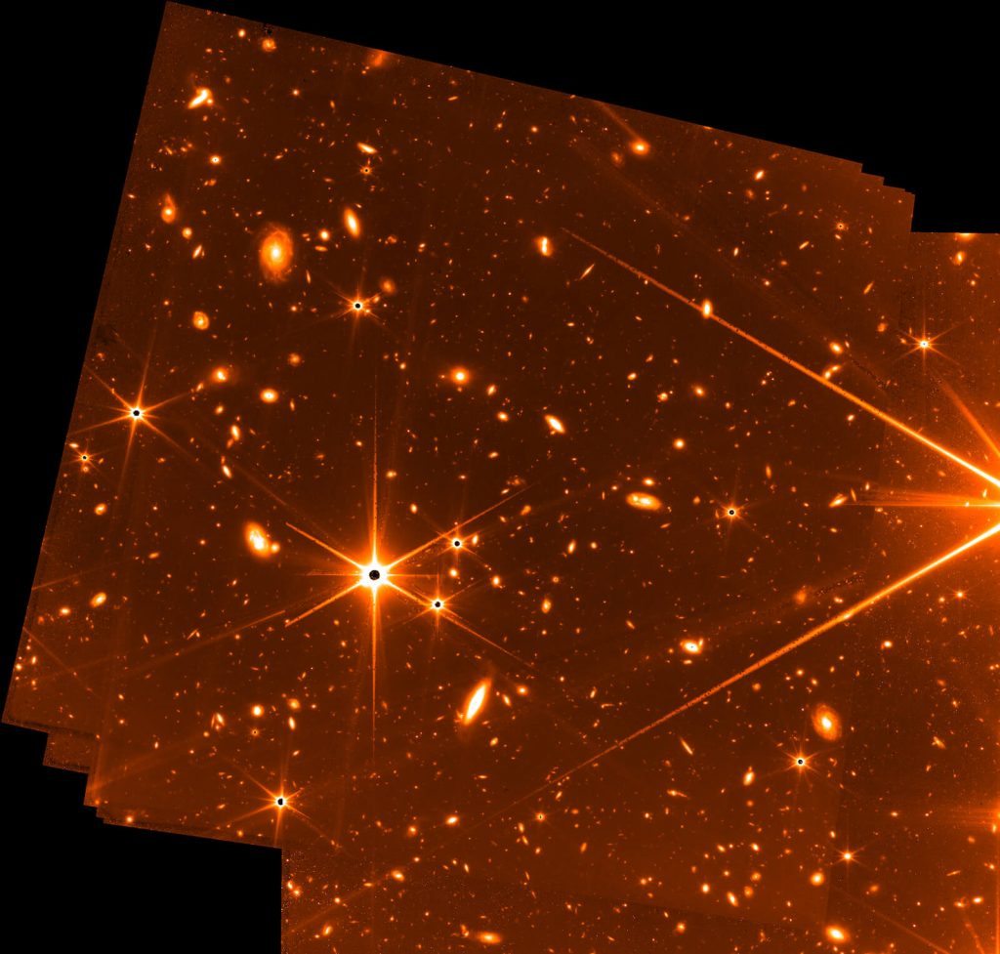

ဒီတော့ ဒီနေရာမှာ မေးစရာလေး ရှိလာပါတယ်။ အဲ့တာကတော့ ဂျိမ်းဝက်ဘ် တယ်လီစကုပ် ကြီးဟာ ဒီလောက် ကျယ်ပြန့်တဲ့ စကြာဝဌာ ကြီးထဲမှာ သူရိုက်ချင်တဲ့ ကြယ် (သို့) ဂလက်ဆီရဲ့ တည်နေရာကို ဘယ်လို ရှာဖွေ သလဲ ဆိုတာပဲ ဖြစ်ပါတယ်။
ဒီလို ရှာဖွေ ဖို့အတွက် တယ်လီစကုပ် ကြီးမှာ တပ်ဆင်ထားတဲ့ လမ်းကြောင်းထိန်း စနစ်ကို အသုံးပြု ရပါတယ်။
Fine Guidance Sensor (FGS) လို့ အမည်ပေး ထားတဲ့ ဒီ ထိန်းကြောင်း စနစ်ကို ကနေဒါ အာကာသ အေဂျင်စီ (Canadian Space Agency) ကနေ တည်ဆောက်ခဲ့တာ ဖြစ်ပါတယ်။ ဒီ စနစ်ဟာ ဂျိမ်းစ်ဝက်ဘ် တယ်လီစကုပ်ကြီး က သူ လေ့လာမယ့် ကြယ်တွေ၊ ဂလက်ဆီ တွေကို ရှာဖွေတဲ့ နေရာမှာ လမ်းညွှန်ပေးဖို့ ဆိုတဲ့ ရည်ရွယ်ချက်နဲ့ အထူးပြု တည်ဆောက် ထားတာ ဖြစ်ပါတယ်။
ဒီ လမ်းညွှန်စနစ် ကနေ ရိုက်ကူးထားတဲ့ ဓါတ်ပုံ တစ်ပုံကို နာဆာက ဒီရက်ပိုင်း အတွင်းမှာ ထုတ်ပြန် လိုက်ပါတယ်။ ဒီပုံဟာ လာမယ့် ၁၂ ရက်နေ့မှာ တွေ့ရမယ့် ဓါတ်ပုံရဲ့ အကြိုပုံ ဆိုရင်လဲ မမှားပါဘူး။ ဒီ ပုံဟာ ဂျိမ်းစ်ဝက်ဘ် တယ်လီစကုပ် ကြီးကနေ ဘယ်လို အဆင့်မြင့်တဲ့ ပုံတွေကို ရိုက်ကူး ပေးနိုင် မှာလဲ ဆိုတာကိုလဲ ကြိုတင် သက်သေ ပြနေတာပါ။
ဒီ FGS ထိန်းကြောင်းရေး စနစ် ကိုယ်နှိုက်ကလဲ ဓါတ်ပုံ ရိုက်ကူးနိုင်တဲ့ စွမ်းဆောင်ရည် ရှိပါတယ်။ ဒါပေမယ့် သူ့ရဲ့ အဓိက လုပ်ငန်း ဆောင်တာကတော့ အလွန် တိကျတဲ့ အကွာအဝေးနဲ့ ထောင့် တိုင်းတာမှုတွေ ပြုလုပ်ဖို့နဲ့ တယ်လီ စကုပ်ကြီးကို အလွန် တိကျစွာ ထိန်းကျောင်း လမ်းညွှန်မှု ပေးနိုင်ဖို့ပဲ ဖြစ်ပါတယ်။
ဒီ ထိန်းကြောင်းစနစ်က ရိုက်ကူးတဲ့ ဓါတ်ပုံတွေ ကိုတော့ တယ်လီစကုပ် ကြီးကို လိုရာ အရပ်ကို အတိအကျ ထိန်းကြောင်း လမ်းညွှန် ပေးဖို့အတွက် အသုံး ပြုပါတယ်။
ဒီပုံတွေကို ပုံမှန်အားဖြင့် သိမ်းဆည်း ထားလေ့ မရှိပါဘူး။ ဘာကြောင့်လဲဆိုတော့ ဂျိမ်းစ်ဝက်ဘ် နဲ့ ကမ္ဘာကြားက ဆက်သွယ်ရေး လမ်းကြောင်းက အကန့်အသတ် ရှိတာမို့ ပင်မ ကင်မရာ တွေက ရိုက်ကူးတဲ့ ပုံတွေကိုပဲ ကမ္ဘာကို ပြန်ပြီး ပေးပို့မှာ ဖြစ်ပါတယ်။

အခု ရရှိတဲ့ ဓါတ်ပုံတွေဟာ သိပ်ပြီး ပြတ်သားမှုတော့ မရှိ သေးပါဘူး။ ဒီပုံတွေဟာ သိပ္ပံ သုတေသန ပြုလုပ်ဖို့ အတွက်တော့ အသုံး ဝင်မှာ မဟုတ်ပါဘူး။
ဒါပေမယ့် ဒီပုံတွေကို တယ်လီစကုပ် ကြီးက သူ့ရဲ့ ရိုက်ကူးနေတဲ့ ကြယ် (သို့) ဂလက်ဆီ တွေကို တည်ငြိမ်စွာ ချိန်ရွယ် ထားနိုင်ကြောင်း ပြသနိုင်ဖို့ အသုံးပြု ကြတာ ဖြစ်ပါတယ်။
အာကာသ တယ်လီစကုပ် ကြီးတွေကနေ ဓါတ်ပုံ ရိုက်တဲ့ အခါမှာ အဝေးက ကြယ်တွေ၊ ဂလက်ဆီ တွေက လာတဲ့ အလင်းဟာ အလွန် အားနည်း ပါတယ်။ ဒါ့ကြောင့် ကျွန်တော်တို့ ကမ္ဘာမှာ နေ့ဖက် ဓါတ်ပုံ ရိုက် သလိုမျိုး ဖြတ်ကနဲ ရိုက်လို့ မရပါဘူး။
ကြယ်တာရာ တွေကို ဓါတ်ပုံ ရိုက်တဲ့ အခါ အနည်းဆုံး မိနစ် ပိုင်း ကနေ နာရီ ပိုင်း အထိ ကင်မရာကို ဖွင့်ပြီး အလင်းကို ဖမ်းယူ ရပါတယ်။
ဒီလို ဖွင့်ထားတဲ့ ကာလမှာ တယ်လီစကုပ် ကြီးဟာ ဘေးဘယ်ညာ ယိမ်းထိုး နေလို့ မရပဲ ရိုက်ကူးနေတဲ့ ဂလက်ဆီကို အတိအကျ အချိန် ကြာမြင့်စွာ ချိန်ရွယ် ထားနိုင်ရမှာ ဖြစ်ပါတယ်။
ဒီလိုပဲ ဒီကာလမှာ ဂျိမ်းစ်ဝက်ဘ် တယ်လီစကုပ် ကြီးဟာ ကမ္ဘာနဲ့ အတူ လိုက်ပြီး နေကို အတူတကွ ပတ်နေတာမို့ ဒီလို ရွေ့သွားတဲ့ အရွေ့ကိုလဲ ထည့်သွင်း စဉ်းစားပြီး ပြန်လည် တည့်မတ် ပေးရပါတယ်။ ဒါတွေ အားလုံးကို FGS ထိန်းကြောင်းစနစ်က အတိအကျ ထိန်းကြောင်းပေးတာ ဖြစ်ပါတယ်။
အခု ဓါတ်ပုံကို သိပ္ပံ သုတေသန အတွက် အသုံးမပြု နိုင်ဘူး ဆိုပေမယ့် ဒါဟာ ဂျိမ်းစ်ဝက်ဘ် ရဲ့ စွမ်းဆောင်ရည် ကိုတော့ မီးမောင်းထိုး ပြနေပါတယ်။
ဒီ ပုံမှာ ၆ မြှောင့်ပုံ အလင်းထွက် နေတာတွေက ကြယ်တွေ ဖြစ်ပါတယ်။ ဒီလို ၆ မြှောင့်ပုံ ဖြစ်ရတာ ကတော့ ဂျိမ်းစ်ဝက်ဘ် ရဲ့ အလင်းပြန် ကြေးမုံ မှန်ဘီလူး တွေက ၆ မြောင့်ပုံ (ဆဌဂံ ပုံ) ဖြစ်နေကြတာ မို့ပါ။
ဒီ ကြယ်တွေရဲ့ နောက်က နောက်ခံထဲက အလင်းစက် လေးတွေ ကတော့ ဂလက်ဆီတွေ ဖြစ်ကြပါတယ်။ ဒီပုံမှာ မြောက်များလှ စွာသော ဂလက်ဆီ တွေကို ဓါတ်ပုံ အနှံ့ တွေ့မြင် ကြရမှာ ဖြစ်ပါတယ်။
ဒီပုံကို ရဖို့ လွယ်လွယ်ကူကူ ရခဲ့တာတော့ မဟုတ်ပါဘူး။ အချိန် ၃၂ နာရီ အချိန်ယူပြီး ပုံပေါင်း ၇၂ ပုံ တိတိ ရိုက်ယူပြီးမှ ရခဲ့တာ ဖြစ်ပါတယ်။ ဒါဟာ စကြာဝဠာရဲ့ အဝေးဆုံး အနက်ရှိုင်းဆုံး ရပ်ဝန်းကို ရိုက်ကူးထားတဲ့ ဓါတ်ပုံတွေ ထဲက တစ်ပုံ ဖြစ်တယ်လို့ နာဆာရဲ့ ဂျိမ်းစ်ဝက် နက္ခတ် မှန်ပြောင်းကြီးကို တာဝန်ယူနေ ကြတဲ့ သိပ္ပံ ပညာရှင် တွေက ပြောပါတယ်။
ဒီ FGS ထိန်းကြောင်း စနစ်မှာ သုံးတဲ့ ကင်မရာဟာ အခြား ကင်မရာ တွေလို ရောင်စုံ ကင်မရာ မဟုတ်ပါဘူး။ ဒါ့ကြောင့် ဒီ ဓါတ်ပုံကနေပြီး ဂလက်ဆီ တွေရဲ့ သက်တမ်းကိုတော့ တွက်ချက်နိင်ခြင်း မရှိဘူးလို့ ဆိုပါတယ်။
ဒီ ဓါတ်ပုံဟာ သေချာ ရည်ရွယ်ပြီး ရိုက်ထားတဲ့ ဓါတ်ပုံလဲ မဟုတ်ပါဘူး။ ဒါပေမယ့် ဒီလို ရည်ရွယ်ချက် မရှိပဲ ရိုက်ကူထားတဲ့ ဓါတ်ပုံမှာ တောင်မှ ဒီလောက်ထိ အသေးစိတ် မြင်ရတယ် ဆိုရင် တကယ့် ပင်မ ကင်မရာက ရိုက်ကူးတဲ့ ဓါတ်ပုံမှာ ဘယ်လောက် အသေးစိတ် လိုက်မလဲ ဆိုတာကို မှန်းဆ ကြည့်နိုင်မှာ ဖြစ်ပါတယ်။
ဒီ ပုံ ၇၂ ပုံကို ရိုက်ကူးခဲ့တဲ့ ၃၂ နာရီဟာ တပြိုင်ထဲ ဆက်တိုက် ရိုက်ကူးခဲ့ တာတော့ မဟုတ်ပါဘူး။ ပြီးခဲ့တဲ့ မေလဆန်း လောက်ကစပွဲ ၈ ရက် ခွဲပြီး ပြီး အကြိမ်ကြိမ် ရိုက်ကူးခဲ့တာ ဖြစ်ပါတယ်။
ဒီ ဓါတ်ပုံ ရိုက်တုန်းက အလင်းရောင် မှေးမှိန်တဲ့ အရာဝတ္ထုတွေကို ပုံပေါ်အောင် ရည်ရွယ် ရိုက်ကူး ခဲ့ခြင်းလဲ မရှိပါဘူး။ ဒါပေမယ့် ဒီ ပုံမှာ အလွန် အလင်းရောင် မှေးမှိန်တဲ့ ဂလက်ဆီ အမြောက်အများကို ထင်ရှားစွာ တွေ့မြင် ကြရမှာ ဖြစ်ပါတယ်။
Ref: Countdown to the Webb Telescope’s First Images | NASA